Multiple choice
The letter and the option it stands for. Select-all questions get every right letter.
Free · Open source · Android, macOS & Windows
A floating lens that reads the question on your screen and explains it — one at a time, or the whole page at once. With the working shown, so you actually learn it.
Android 10+, macOS 14+ and Windows 10+. Bring your own free Groq key.
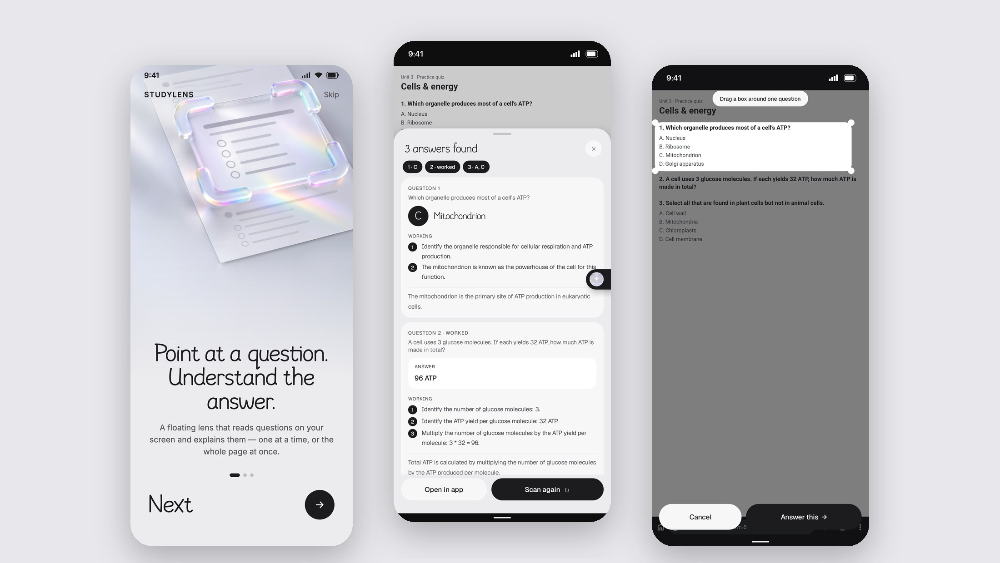
One tap.
Every question on screen, answered.
Multiple choice gets the letter. Calculations get the result and the steps. Definitions get a clean sentence.
How StudyLens works
No account and no StudyLens server. Your device, your Groq key, and one screenshot at a time.
Tap the lens on Android, press Ctrl Alt B on Windows or ⌃ ⌥ B on Mac. Pick Full screen, or drag a box around One question.
StudyLens hides its own bubble, takes a single screenshot and keeps it sharp at full resolution so small exam print stays readable. Nothing is recorded.
The image goes straight from your device to a vision model on Groq, chosen automatically for your key. It's asked to solve, check its work, and say what kind of question each one is.
The answer appears in a card over what you're reading — a letter, a result with working steps, or a short sentence — and is saved to your history for revision.
The lens
A small glass lens docks to the side of any app. Drag it up or down, flick it to the other edge, and tap it when you need it. Choose Full screen or One question.
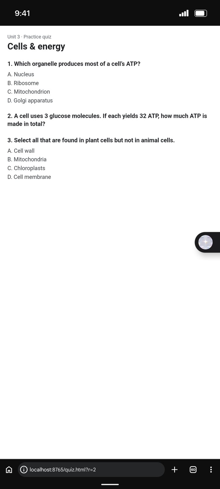

Full screen
StudyLens takes one screenshot, finds every question on it — usually two or three — and answers each in its own card. A summary row up top shows every answer at a glance.
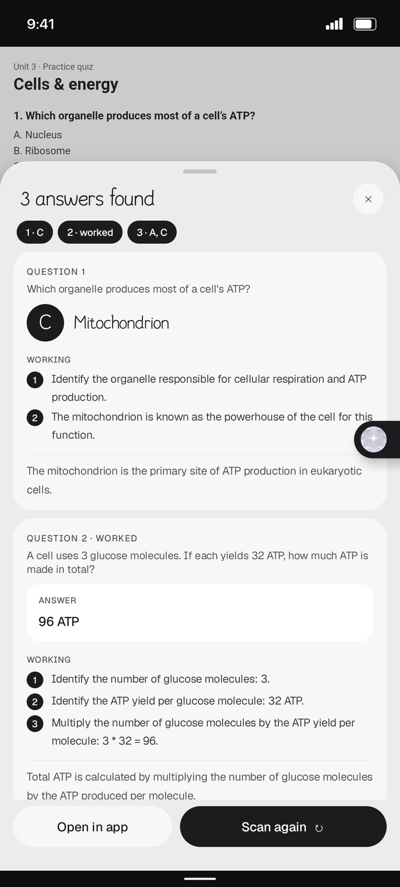
One question
The screen freezes and dims. Draw a box around a single question and tap Answer this. The answer slides up underneath, with Next question ready to go.
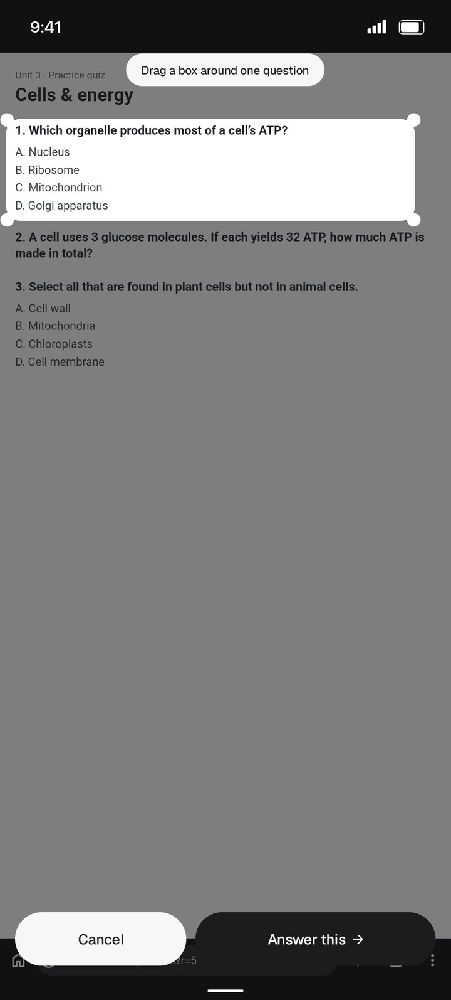
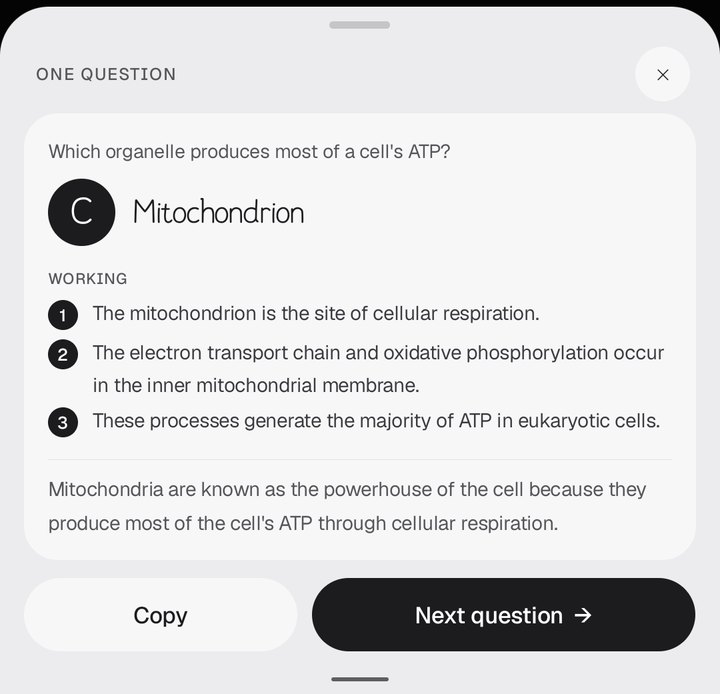
Shows its working
The letter and the option it stands for. Select-all questions get every right letter.
The final result for each part — (i), (ii), (iii) — and two to five numbered working steps.
Definitions and one-liners, written as a clean sentence you can copy into your notes.
Windows
StudyLens sits in the system tray. Ctrl Alt B lets you drag over one question; add Shift for the whole screen, answered in a side panel.

macOS
A quiet menu bar app. Hover over a question, press ⌃ ⌥ B, and a small card appears beside your cursor with the answer and a one-line reason. Click it for the full explanation.
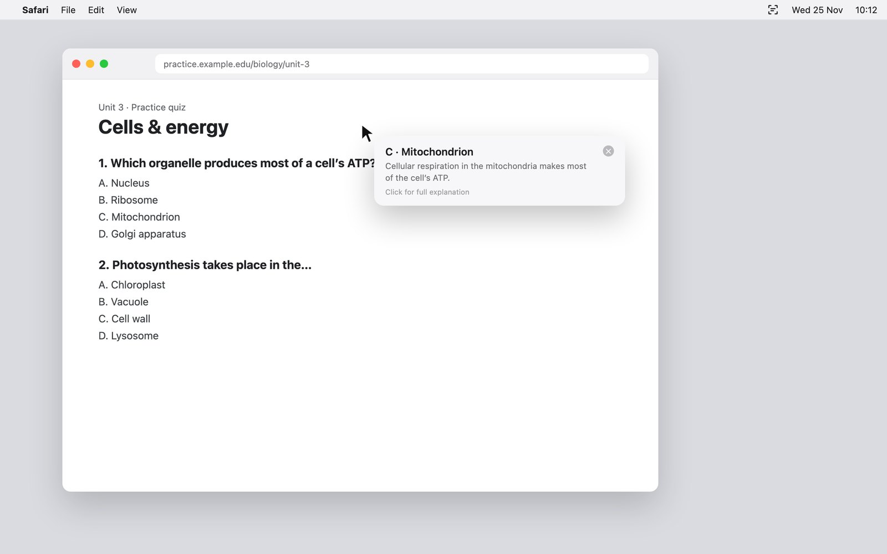
History
Every scan is saved on your device with its screenshot and answers. Search it, filter by one question or full screen, copy an answer into your notes, or delete it.
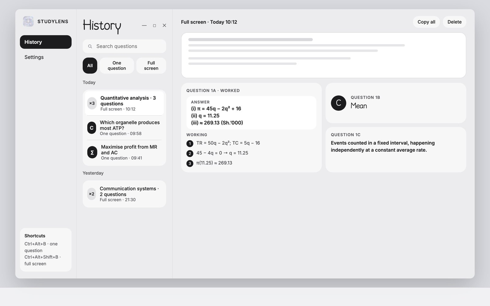
Soft silver, one glass lens, and type that gets out of the way.
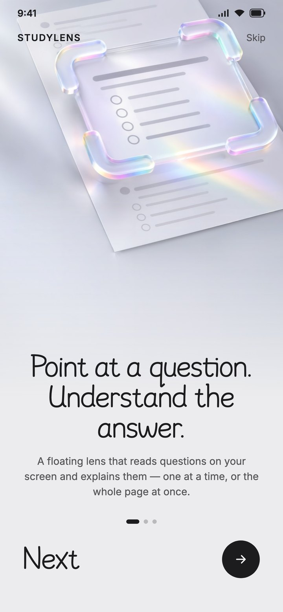
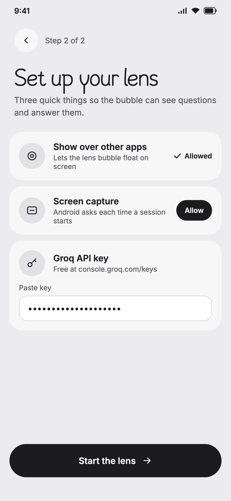


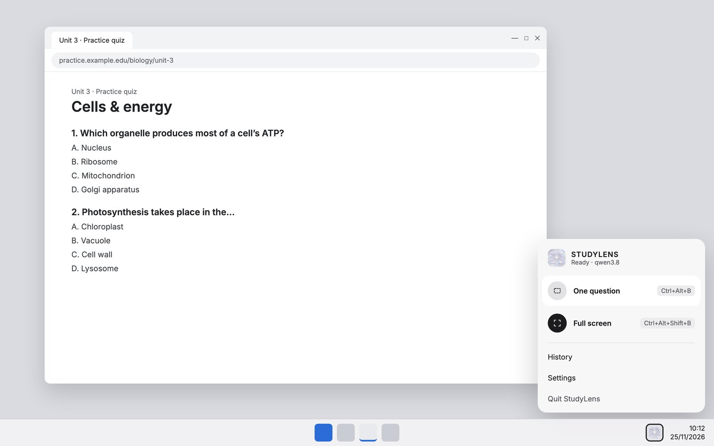
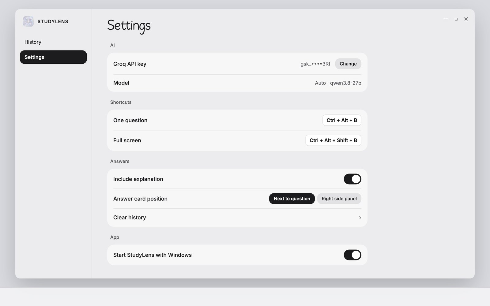
Everything it does
One screenshot of the whole screen. StudyLens finds every question on it — usually two or three — and answers each separately.
The screen freezes and dims. Drag a box around a single question, adjust it if you like, then tap Answer this (or press Enter on Windows).
A glass lens docked on the screen edge over any app. Drag it up or down, flick it to the other side and it snaps to the edge. Tap it for the menu.
Full screen, One question, Open app and Hide bubble — everything one tap away, with a dimmed background so you stay focused.
Ctrl Alt B for one question and Ctrl Alt Shift B for the whole screen, from any app. If another app owns the shortcut, StudyLens tells you.
Click the tray icon for a compact menu: both capture modes with their shortcuts, History, Settings and Quit. Shows whether you're ready and which model is in use.
A small icon in the menu bar. Press ⌃ ⌥ B with your cursor over a question and it captures the area around it.
Captures the screen your cursor is on and places cards in real pixels, so it lines up on scaled and mixed displays.
A round letter badge with the option text beside it. “Select all that apply” gets every correct letter, like A, C.
Calculations show the final result for each part — (i), (ii), (iii) — each on its own line, then 2–5 numbered Working steps.
Definitions and one-word answers come back as a clean sentence in an Answer box, ready to copy into your notes.
A one-line reason under every answer. Turn it off in Settings if you just want the result.
The model is asked to solve and verify before replying, so you get the final result — not “wait, let me recalculate”.
Full-screen scans start with chips like 1 · C, 2 · worked, 3 · A, C so you see every answer at a glance.
Copy an answer with its steps, jump to the next question, or rescan the page. On Windows, choose a card beside the question or a side panel.
No silent failures. If Groq is busy, the rate limit is hit, or no question was found, the card says so — with what to try next.
Every scan is saved with its screenshot and answers, grouped by day. Filter by One question or Full screen; search on Windows; tap to enlarge the screenshot.
Remove a single scan or clear everything from Settings. It's all stored on your device.
StudyLens asks Groq which models your key can use and picks one that reads images. If it's retired, it moves to the next — no update needed.
A short first run: permissions on Android, your Groq key on every platform, and the shortcuts on Windows. Nothing to configure after that.
Small, Medium or Large, so the lens is easy to hit without covering what you're reading.
Optional. StudyLens starts quietly in the tray when you sign in, and closing the window keeps it running there.
The Android interface keeps its proportions on every phone and display-size setting, and text never drops below a readable size.
One calm look across all three platforms: soft silver, a glass focus-frame icon, dark pill buttons and Agrave Pro headings.
Privacy
Nothing is recorded. StudyLens only looks at your screen when you ask it to.
The screenshot goes straight from your device to Groq with your own key. There's no StudyLens server in between.
Answers and screenshots live on your device. Clear them any time in Settings.
Free and open source. You'll need a free Groq API key.
The floating lens bubble. Allow “Display over other apps” and turn on StudyLens screenshots in Accessibility.
Download APKMenu bar app for Apple silicon and Intel. Right-click → Open the first time, then allow Screen Recording.
Download for MacTray app, one file, nothing to install. On the SmartScreen prompt choose More info → Run anyway.
Download for WindowsYes. The apps are free and open source. Answers come from Groq, which has a free tier — create a key at console.groq.com and paste it in once.
StudyLens asks Groq which models your key can use and picks one that can read images automatically. If a model is retired, it moves on to the next one.
It's the only way Android lets an app take a single screenshot without starting a screen recording. StudyLens uses it for that alone, and only when you tap the bubble.
The builds aren't signed with a paid certificate yet. On Windows choose More info → Run anyway; on Mac right-click the app and choose Open; on Android allow installs from your browser or file manager.
They're usually good, but AI can make mistakes. That's why StudyLens shows its working — check the steps, and use it to learn, not to skip learning.
Only where your school or exam rules allow it. StudyLens is built for studying, homework and practice, and its answers are always shown openly on screen.
The first release, on Android, macOS and Windows.